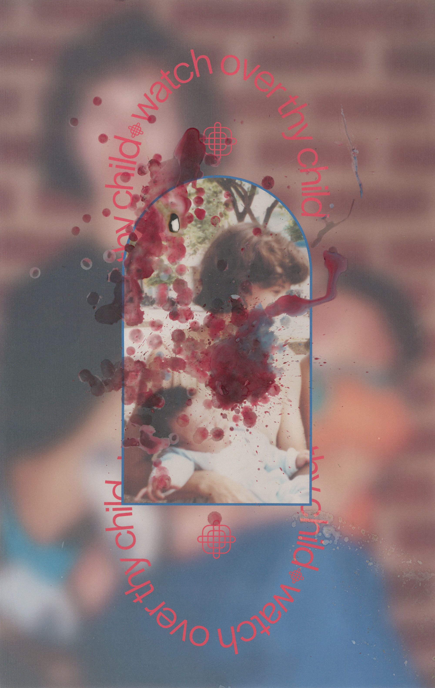
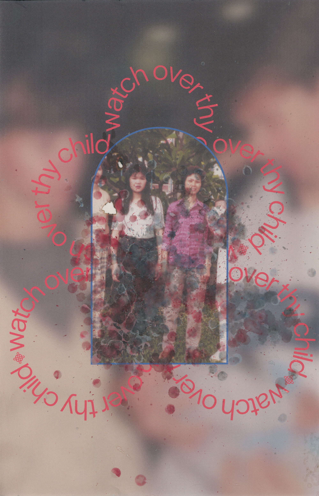
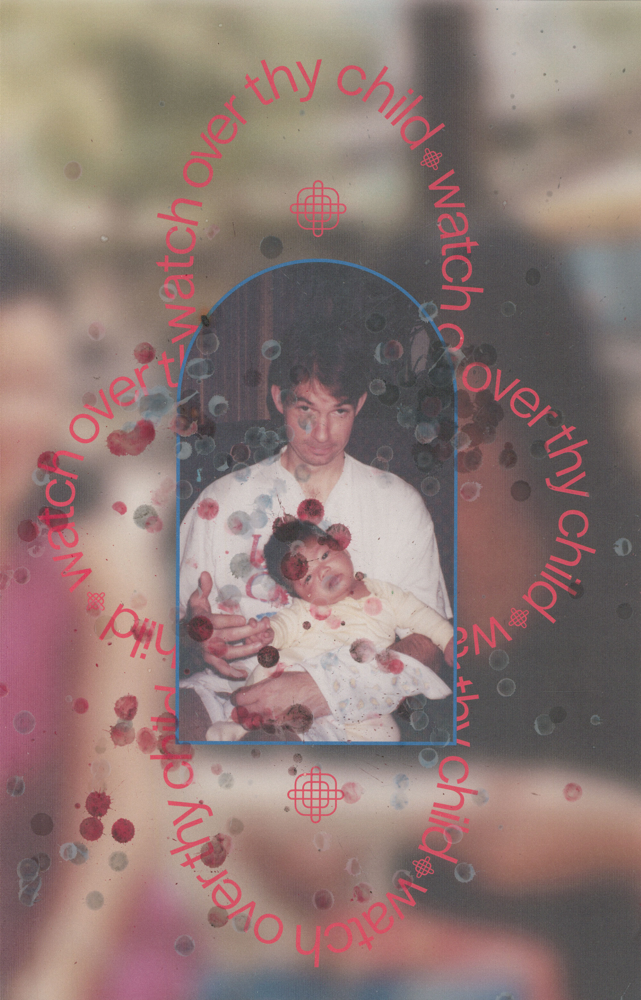

Split at birth. A prayer for my provenance. An attempt to reconnect.
•Watch over thy child as his days increase bless and guide him wherever he may be • Keeping him unspotted from the world • Strengthen him when he stands • Comfort him when discouraged or sorrowful raise him up if he fall • And in his heart may thy peace which pass in the understanding abide all •



